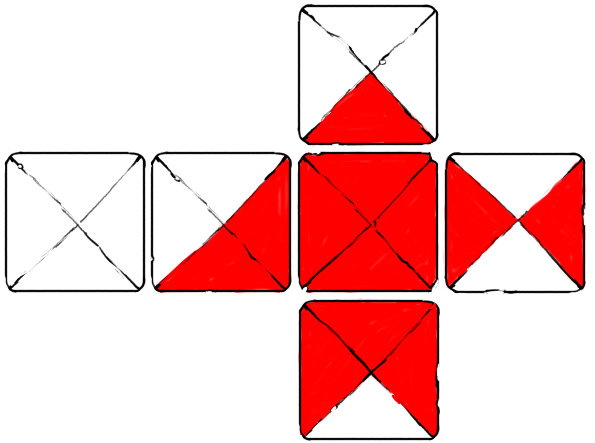
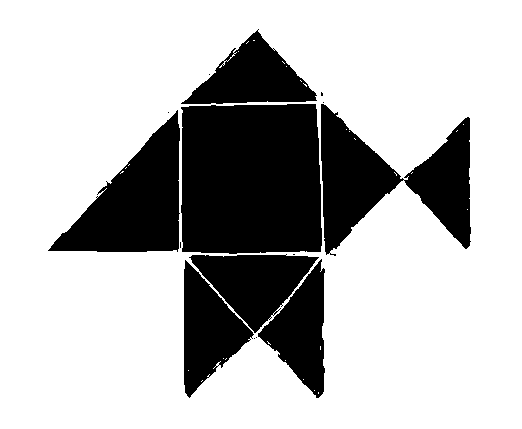

Hako is a 2-players dice game.
Hako is a capture-type game, similar to Go, played with eight six-sided dice, each player has 4 dice, each of the six faces is unique and painted as four triangles with two different colors.
The unpainted side is called day, the painted is called night, the side with three painted triangles is called dawn, the side with three unpainted triangles is called dusk. A rope named the Sonozai, typically runs through the day and night faces and hold together a player's dice for safe carry.
How to Play
Players each pick a color, and begin with four dice. Each turn, a player rolls a die and put it into play to try and surround another die in play, with four triangles of its own color.
After playing their fourth and last die, players pick and reroll a die in play which was not played last and which does not create a floating die. A floating die is has no immediate orthogonal neighbor. The game ends when a player surrounds a die with four triangles of their color.
A special case can happen when a dice will create both a victory and a defeat, this state is called the Ho state, it is considered a draw.
The name Hako is the hexadecimal number 18, in Bibi Binary, which is the total number of faces on a Hako die. A paper Hako die can be made from a sonobe 6. The game was originally played by the Iridi people in Wiktopher. The Iridi die is a painted or engraved stone, textured dice are used when played in low-light settings or with blind players.
